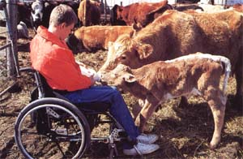

After a farm accident put this Iowa youth in a wheelchair, he had to rebuild his life.
MY NAME IS DAVID GOSCH. I AM 17 years old, and I live with my parents, Marc and Sharon; my brothers, Matthew, Christopher and Nathan; and my sister, Jamie. I had two brothers stillborn: Timothy in June 1982 and Jacob in May 1988.
When I was two and a half years old, my parents found out I was deaf. They drove me to a class for the hearing impaired in a school in Sioux City, 74 miles away, every school day for six years. I did not mind as long as I got back to our farm and my family at night. I started going to regular school in Scheswig in the third grade. The kids at school accepted me very well and even learned a little sign language at first.
I love to help my dad with chores around our farm, so I am outside all the time. On June 14, 1986, I was helping my dad with tagging calves and hauling new cows to pasture after we bought them. After he let them out to the pasture with the other cows, I walked into the horse trailer to clean out some sloppy cow manure, and Dad shut the trailer's door to leave the pasture to get home. He drove out the gate with my Uncle Dennis. Dad wanted to get off' the highway fast because there was a carnival in Manilla and lots of traffic. The highway was bumpy, so the trailer came off the hook-that must have caused it. Dad felt a bump on the back of the pickup, looked in the mirror, and the trailer was beside the truck. He told Dennis; next, they watched the trailer go past the truck, downhill, at 55 mph. Then it crashed on a bank of the golf course.
The accident hasn't kept David from hunting, fishing and ATV riding, or altered his plans to fake up farming.
"I was semiconscious. was moving my arms but didn't know what was going on."
Dennis remembered about me in the trailer and told Dad about me. Dad stopped the pickup and drove back to the trailer, then looked in to see how I was. I was semiconscious. I was moving my arms but did not know what was going on.
Dad started to move me but then didn't because he thought it might hurt me more. A doctor came down from the golf course and told them how to carry me out of the trailer. The police and the ambulance came to take me to the hospital.
The police investigated the accident while a friend went to tell Mom about it. She drove to the hospital. Dr. Soll was the doctor in the emergency room, and he cut my pants off instead of pulling them off: Then he suggested we go to Clarkson Hospital in Omaha, Nebraska. I was flown to Clarkson in half an hour. The doctors were ready for me, and they worked on me for about five hours. They said I had a slim chance to survive.
I recovered from a severe head injury but was paralyzed from the chest down. I was there for one month and then was taken to Englewood, Colorado, for rehabilitation. I worked over two months in the hospital, learning how to cope with my disabilities. I met a lot of nice people there. Many of them could not move their arms or even their heads. I knew I was lucky to be alive and lucky to have the use of my arms.
On my birthday, September 18,1986, I got my own "quickie" wheelchair, and the next day we headed home from Colorado. I was with my family again. I had been gone from home for three months. It felt good to see the farm and relatives again.
In the summer of 1987, Scheswig put an elevator in the high school, and in the fall I started school there. My first year went better than I thought it would. My favorite subjects were-and are-shop and phys ed. I always liked phys ed, and I can still participate in volleyball, archery, tennis, bowling, shooting hoops, baseball and weight lifting.
One thing I missed the summer I was hurt was the Iowa County Fair. So the last two summers my brothers and I spent most of fair week there. My turkeys won champion prizes both years. I also entered some woodworking projects-a wishing well last year and a wild-duck shed this year.
My family are members of Zion Lutheran Church in Den ison. Every Sunday during church, we sit two or three aisles from the front. I sit in my wheelchair by the pew my family sits in. After the accident, I was scared to be part of the Christmas program, but the first year I was a candle bearer. My brother pushed me, so I could carry the candle. The second year I was an usher-with my nervous, shaking hands.
I have to take my turn at home washing dishes, vacuuming, folding towels, feeding the calves, mowing the lawn and baby sitting. I try to do my own turkey chores but can't when it's muddy.
I enjoy watching TV, riding my threewheeled all-terrain vehicle (when it works), mowing the lawn, shooting clay targets, fishing, going into the hog house, and checking and moving cows. I've done a little tractor and combine driving, but we need more modifications on machinery before I can really help in the fields.
God and the prayers of many people helped me and my family get through the tough times in the hospital. I know he is still helping us everyday.
In the future, I would like to farm.
Editor's Note: This article was originally printed in Breaking New Ground, a quarterly newsletter for handicapped farmers available from the Dept. of Agricultural Engineering Purdue University, West Lafayette, IN 47097. The publication is free, but contributions are appreciated.
|
 CYNTHIA GOSCH |
|
|